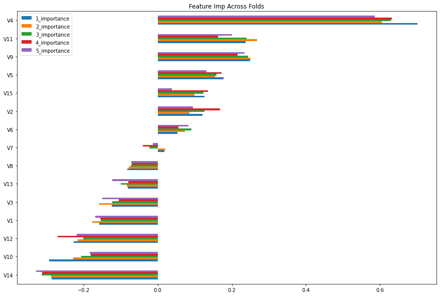
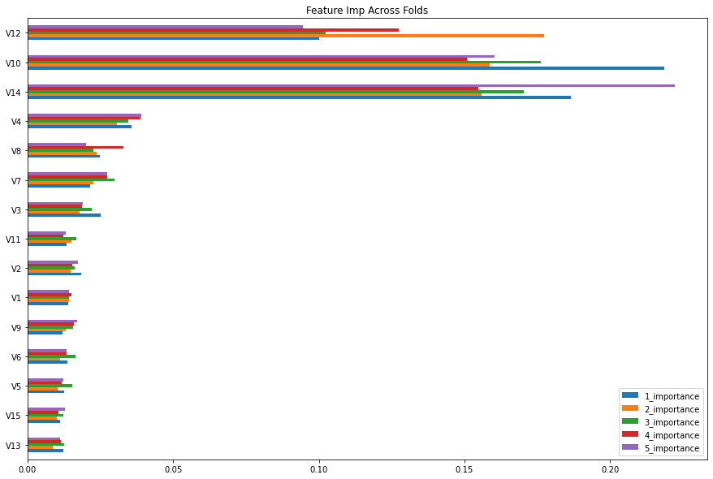
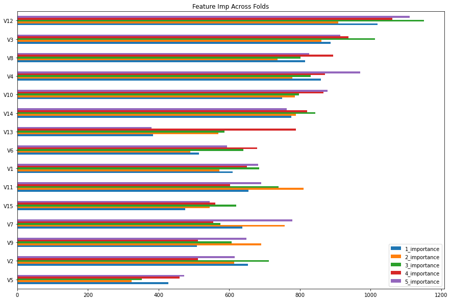
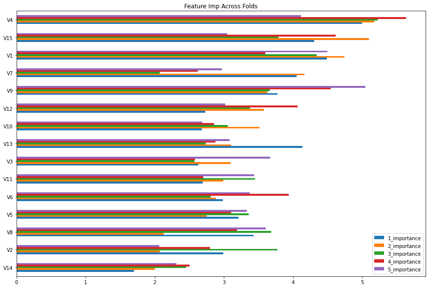

The dataset for this competition (both train and test) was generated from a deep learning model trained on the Credit Card Fraud Detection. Feature distributions are close to, but not exactly the same, as the original.
We are given three files:
train.csv - the training dataset; Class is the target
test.csv - the test dataset; our objective is to predict Class
sample_submission.csv - a sample submission file in the correct format
Description of each column:
Feature Description
Feature
Description
id
Indentifier for unique rows
Time
Number of seconds elapsed between this transaction and the first transaction in the dataset
V1-V28
Features generated from the original dataset
Amount
Transaction amount
Class
Target Feature: 1 for fraudulent transactions, 0 otherwise
print(f"Training set has {train.shape[0]} rows and {train.shape[1]} columns")print(f"Testing set has {test.shape[0]} rows and {test.shape[1]} columns")print(f"Original set has {original.shape[0]} rows and {original.shape[1]} columns")
Training set has 219129 rows and 32 columns
Testing set has 146087 rows and 31 columns
Original set has 284807 rows and 31 columns
# Check for missing valuesprint(f"Number of missing values in training set: {sum(train.isna().sum())}")print(f"Number of missing values in testing set: {sum(test.isna().sum())}")print(f"Number of missing values in original set: {sum(original.isna().sum())}")
Number of missing values in training set: 0
Number of missing values in testing set: 0
Number of missing values in original set: 0
# Merge train and originaltrain = pd.concat([train, original], axis=0, ignore_index=True)
cols = [col for col in train.columns if col notin ['id', 'Time']]print(' Number of duplicates with new criteria:', train[cols].duplicated().sum())
Number of duplicates with new criteria: 9254
# Drop Duplicatestrain.drop_duplicates(subset=cols, inplace=True, keep='first')
# Drop columnstrain.drop(['id', 'Time'], axis=1, inplace=True)test.drop(['id', 'Time'], axis=1, inplace=True)
# Plot feature importance for logistic regression modelplot_feature_imp(results[model]['feature_imp'], "2_importance")

# Made a baseline submission to see how the model performslr_submission = submissions.copy()lr_submission['Class'] = results[model]['test_pred']lr_submission.to_csv('lr_submission.csv', index=False)
# Plot feature importance for XGBoost modelplot_feature_imp(results[model]['feature_imp'], "2_importance")

# Made a submission to see how the model performsxgb_submission = submissions.copy()xgb_submission['Class'] = results[model]['test_pred']xgb_submission.to_csv('xgb_submission.csv', index=False)
n_folds =5seed =42model ='LGBMClassifier'skf = StratifiedKFold(n_splits=n_folds, shuffle=True, random_state=seed)test_pred =0results[model] = defaultdict(list)for idx, (train_idx, test_idx) inenumerate(skf.split(X_train, y_train)): X, y = X_train.iloc[train_idx], y_train.iloc[train_idx] X_valid, y_valid = X_train.iloc[test_idx], y_train.iloc[test_idx] lgbm = LGBMClassifier(**lgbm_params)# Fit the model lgbm.fit(X, y)# Predict on validation set pred_proba = lgbm.predict_proba(X_valid)[:, 1]# Predict on test set test_pred_proba = lgbm.predict_proba(test)[:, 1] test_pred += test_pred_proba/n_folds# Calcualte AUC score auc = roc_auc_score(y_valid, pred_proba)# Feature Importance feature_imp = pd.DataFrame(index=X_train.columns, data=lgbm.feature_importances_, columns=[f"{idx +1}_importance"])print(f"Fold={idx+1}, AUC score: {auc:.2f}")# Save Results results[model]['auc'].append(auc) results[model]['model'].append(lr) results[model]['feature_imp'].append(feature_imp)results[model]['test_pred'] = test_predprint(f"Mean AUC: {np.mean(results[model]['auc'])}")
[LightGBM] [Warning] lambda_l1 is set=0.01, reg_alpha=0.0 will be ignored. Current value: lambda_l1=0.01
[LightGBM] [Warning] bagging_fraction is set=0.45, subsample=1.0 will be ignored. Current value: bagging_fraction=0.45
[LightGBM] [Warning] min_data_in_leaf is set=46, min_child_samples=20 will be ignored. Current value: min_data_in_leaf=46
[LightGBM] [Warning] feature_fraction is set=0.3, colsample_bytree=1.0 will be ignored. Current value: feature_fraction=0.3
[LightGBM] [Warning] min_gain_to_split is set=1.42, min_split_gain=0.0 will be ignored. Current value: min_gain_to_split=1.42
[LightGBM] [Warning] lambda_l2 is set=0.6, reg_lambda=0.0 will be ignored. Current value: lambda_l2=0.6
Fold=1, AUC score: 0.89
[LightGBM] [Warning] lambda_l1 is set=0.01, reg_alpha=0.0 will be ignored. Current value: lambda_l1=0.01
[LightGBM] [Warning] bagging_fraction is set=0.45, subsample=1.0 will be ignored. Current value: bagging_fraction=0.45
[LightGBM] [Warning] min_data_in_leaf is set=46, min_child_samples=20 will be ignored. Current value: min_data_in_leaf=46
[LightGBM] [Warning] feature_fraction is set=0.3, colsample_bytree=1.0 will be ignored. Current value: feature_fraction=0.3
[LightGBM] [Warning] min_gain_to_split is set=1.42, min_split_gain=0.0 will be ignored. Current value: min_gain_to_split=1.42
[LightGBM] [Warning] lambda_l2 is set=0.6, reg_lambda=0.0 will be ignored. Current value: lambda_l2=0.6
Fold=2, AUC score: 0.90
[LightGBM] [Warning] lambda_l1 is set=0.01, reg_alpha=0.0 will be ignored. Current value: lambda_l1=0.01
[LightGBM] [Warning] bagging_fraction is set=0.45, subsample=1.0 will be ignored. Current value: bagging_fraction=0.45
[LightGBM] [Warning] min_data_in_leaf is set=46, min_child_samples=20 will be ignored. Current value: min_data_in_leaf=46
[LightGBM] [Warning] feature_fraction is set=0.3, colsample_bytree=1.0 will be ignored. Current value: feature_fraction=0.3
[LightGBM] [Warning] min_gain_to_split is set=1.42, min_split_gain=0.0 will be ignored. Current value: min_gain_to_split=1.42
[LightGBM] [Warning] lambda_l2 is set=0.6, reg_lambda=0.0 will be ignored. Current value: lambda_l2=0.6
Fold=3, AUC score: 0.91
[LightGBM] [Warning] lambda_l1 is set=0.01, reg_alpha=0.0 will be ignored. Current value: lambda_l1=0.01
[LightGBM] [Warning] bagging_fraction is set=0.45, subsample=1.0 will be ignored. Current value: bagging_fraction=0.45
[LightGBM] [Warning] min_data_in_leaf is set=46, min_child_samples=20 will be ignored. Current value: min_data_in_leaf=46
[LightGBM] [Warning] feature_fraction is set=0.3, colsample_bytree=1.0 will be ignored. Current value: feature_fraction=0.3
[LightGBM] [Warning] min_gain_to_split is set=1.42, min_split_gain=0.0 will be ignored. Current value: min_gain_to_split=1.42
[LightGBM] [Warning] lambda_l2 is set=0.6, reg_lambda=0.0 will be ignored. Current value: lambda_l2=0.6
Fold=4, AUC score: 0.89
[LightGBM] [Warning] lambda_l1 is set=0.01, reg_alpha=0.0 will be ignored. Current value: lambda_l1=0.01
[LightGBM] [Warning] bagging_fraction is set=0.45, subsample=1.0 will be ignored. Current value: bagging_fraction=0.45
[LightGBM] [Warning] min_data_in_leaf is set=46, min_child_samples=20 will be ignored. Current value: min_data_in_leaf=46
[LightGBM] [Warning] feature_fraction is set=0.3, colsample_bytree=1.0 will be ignored. Current value: feature_fraction=0.3
[LightGBM] [Warning] min_gain_to_split is set=1.42, min_split_gain=0.0 will be ignored. Current value: min_gain_to_split=1.42
[LightGBM] [Warning] lambda_l2 is set=0.6, reg_lambda=0.0 will be ignored. Current value: lambda_l2=0.6
Fold=5, AUC score: 0.90
Mean AUC: 0.8997556737837178
# Plot feature importance for LightGBM modelplot_feature_imp(results[model]['feature_imp'], "4_importance")

# Made a submission to see how the model performslgbm_submission = submissions.copy()lgbm_submission['Class'] = results[model]['test_pred']lgbm_submission.to_csv('lgbm_submission.csv', index=False)
# Plot feature importance for CatBoost modelplot_feature_imp(results[model]['feature_imp'], "2_importance")

# Made a submission to see how the model performscatb_submission = submissions.copy()catb_submission['Class'] = results[model]['test_pred']catb_submission.to_csv('catb_submission.csv', index=False)
catb_submission.head()
id
Class
0
219129
0.000671
1
219130
0.000433
2
219131
0.000124
3
219132
0.000599
4
219133
0.000103
3.5. Ensemble Results
a =0.1b =0.4c =0.3d =0.2pred = a * lr_submission['Class'] + b * xgb_submission['Class'] +\ c * lgbm_submission['Class'] + d * catb_submission['Class']# Made a submission to see how the model performssubmission = submissions.copy()submission['Class'] = predsubmission.to_csv('submission_CatB.csv', index=False)
a =0b =0.4c =0.4d =0.2pred = a * lr_submission['Class'] + b * xgb_submission['Class'] +\ c * lgbm_submission['Class'] + d * catb_submission['Class']# Made a submission to see how the model performssubmission = submissions.copy()submission['Class'] = predsubmission.to_csv('submission_noLR.csv', index=False)
4. Conclusion
Thank you for reading so far and I hope you found this notebook helpful.
Upvote if you liked it, comment if you loved it. Hope to see you guys in the next one. Peace!